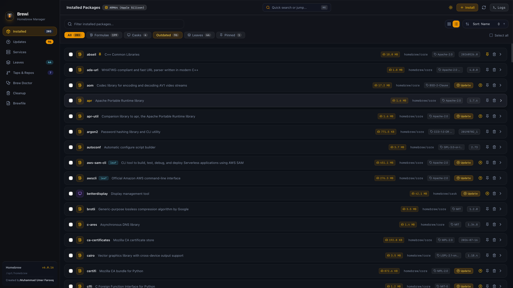

The ultimate macOS Homebrew desktop experience. Manage formulae, casks, background services, disk hygiene, and system diagnostics with instant performance and zero bloat.

Designed for developers who demand performance, security, and visual elegance.
Built on Tauri v2 and Tokio async Rust processes. Launches instantly in under 0.1 seconds with negligible CPU & RAM consumption.
Switch between multiple installed Cellar versions of any formula with 1 click. Never get locked out by breaking updates.
Explore interactive dependency trees and reverse dependents so you always know why a formula was installed.
Start, stop, restart, and monitor background Homebrew daemons (PostgreSQL, Redis, Nginx, MySQL) with real-time exit codes.
Preview dry-run scans and purge gigabytes of stale downloads, old formula versions, and cache files safely.
Run automated system diagnostic health checks with formatted warning lists and actionable repair instructions.
Fully internationalized for global developers with instant language switching between English, German (Deutsch), French (Français), Spanish (Español), and Urdu (اردو) with native Right-to-Left (RTL) bidirectional layout and typography.
Compare Brewi with traditional, unmaintained Homebrew GUI wrappers.
| Feature Capability | ⚡ Brewi | 📦 WailBrew | 🍰 Cakebrew |
|---|---|---|---|
| Formulae & Cask Management | ✅ Full Support | ✅ Supported | ⚠️ Limited Casks |
| Homebrew Services Manager | ✅ Full Control | ✅ Basic | ❌ Not Available |
| Version Rollback & Switcher | ✅ Instant Switch | ❌ No | ❌ No |
| Interactive Dependency Tree | ✅ Visual Graph | ❌ No | ❌ No |
| Disk Size & Space Calculation | ✅ Real-time Disk Size | ❌ No | ❌ No |
| Active Maintenance & Modern Tech | ✅ Rust + React 19 | ✅ Active | ❌ Unmaintained |
Brewi is 100% open-source with modular Rust architecture, complete Vitest coverage, and comprehensive developer docs.
Explore Tauri v2 IPC handlers, tokio process streaming, TaskManager process cancellation, and Mermaid data flows.
Run 121 Vitest component/hook tests, 52 Cargo Rust unit tests, coverage reports, and GitHub Actions CI pipelines.
Guidelines for adding new Tauri IPC commands, creating modular React components, and submitting pull requests.
Detailed catalog of Brewi features: Health Guard, Services Manager, Version Switcher, and Brewfile export.